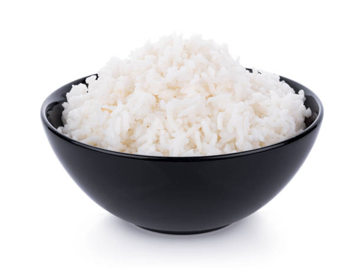

Home
White Rice

Description:
Rice can be easily cooked by boiling or microwaving it in water
Ingredients:
- 250grams of white rice
- 500mL of water
Steps:
- Wash the rice
- Add the rice in microwavable container
- Add the water which should be roughly double the rice contents
- Microwave for 16 minutes or until all the water has dried